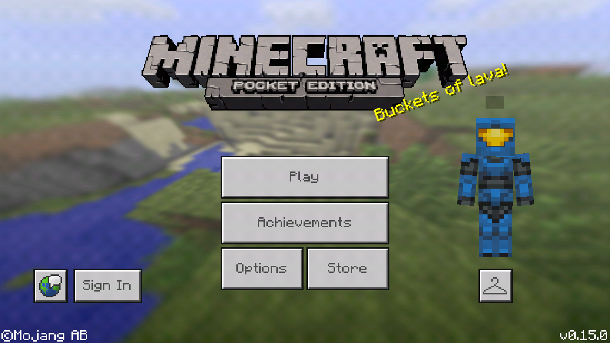
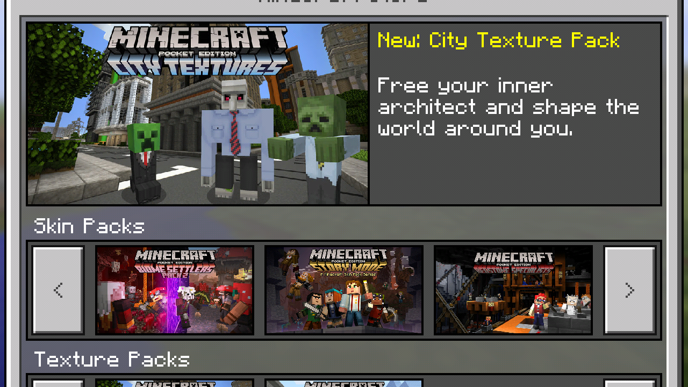
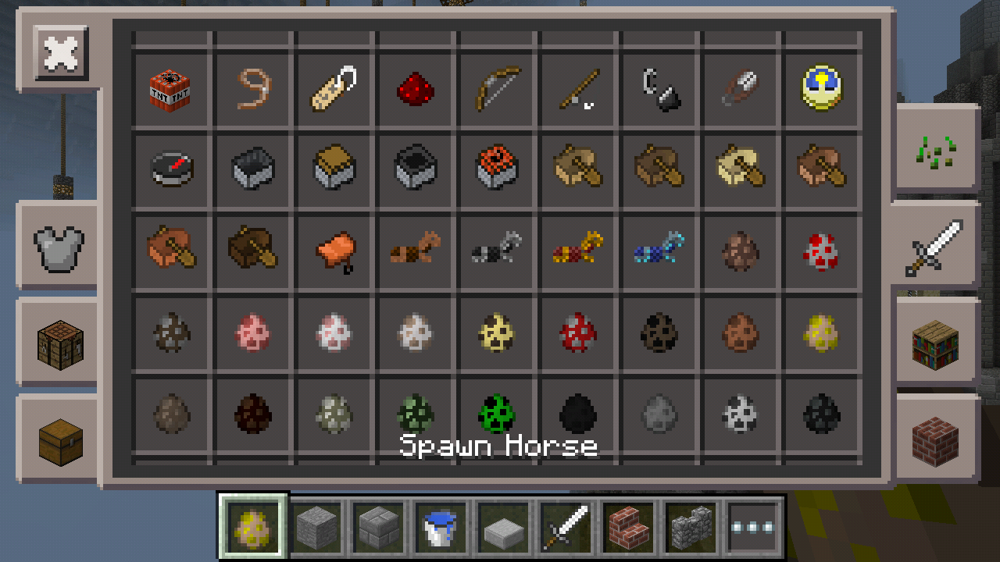
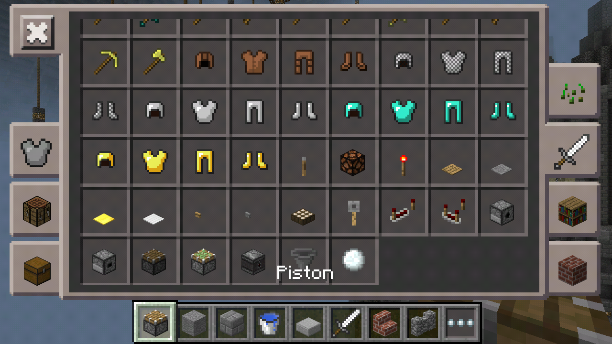

Minecraft 0.15.0 is out!
Minecraft 0.15.0 is out!
| Official Name: | Friendly Update |
| Release Date: | Android-June 10, 2016 iOS,FireOS, Windows Phone, Widows10-June 13, 2016 |
Alpha 0.15.0, the first release of the Friendly Update, is an update to Minecraft: Pocket Edition which added pistons,realms, and other additions and changes
·Sounds
Version exclusive: Added sounds for jumping on blocks.

·Title screen
Skins Button
New Store Button
·Achivements
Version exclusive: More achievements.
·Resource Packs
Some resource packs aren't complete.
In the game and in the options menu, they are refered to as texture packs, but in the game, when you manage the available resource packs from the options menu, there are options to move them around and select multiple resource packs, like in the PC versions. Also, in the files, there is a folder clled resource_packs, where the resource pack are stored.

·Online multiplayer with Xbox Live Friends.
·New UI for the main menu, shared with the Windows 10 Edition.
·New UI for the skins menu, it has skin selecton carousel that is similar to Console Edition.
·Version exlusive: Added eating animation for nimals when feeding them.
·GUI
Moved hunger bars, health and experience to above the hotbar(Large devices only)
·Pig riding
Version exclusive: New sound when accelerates.
·Interact buttons

Boost, used when riding a pig with a carrot os stick.
Names, used for name mobs using name tags.
Leash, used for leashing a mob with a lead'
Take Picture, used for taking pictures with a camera (currently not available in the game, but in the files).
·Pistons and Sticky pistons
Version exclusive: New animation; piston arm is visibly thicker at the bottom
Version exclusive: Can push block entities such as chest
Version exclusive: Block entities that stick to walls(such as levers)can now be placed on pistons and sticky pistons
·Version exclusive: Observer

BUD block
·Raw mutton
·Cooked mutton
·Fire charges
·Spawn eggs
Version exclusive: Zombie horse
Version exclusive: Skeleton horse
Donkey
Mule
Version exclusive: Stray
Version exclusive: Husk
Version exclusive: Wither Skeleton
·Name tags
·Lead
·Carrot on stick
·Tipped arrows
Version exclusive: Made with potion cauldrons
·Horse armor
Version exclusive: Leather horse armor
Can be dyed using cauldron
Can be crafted with leader
Stray
Husk
Horse
Mule
Donkey
·New village types
Taiga village
Uses spruce wood instead of oak
Savana village:
Uses acacia wood instead of oak
Zombie village:
Version exclusive: Buildings generate with moss stone floors.
Spawn zombie villagers instead of normal villagers.
The village generates without any doors or torches
Jungle temple
Title screen
New scroll bar
Online play uses less bandwidth now.
Noteblocks are a lot louder now.
When player's name is Dinnerbone or Grumm, the players model turns to an upside down model.
Drops iOS 7 and earlier support; iOS 8 or later required.
Inventory button now is more transparent.
·Shears
Now lose durability when breaking any king of blocks.
·Trap doors
No longer require supporting blocks.
·Paintings
Now have sounds when placed and broken.
·Rose bush
Version exclusive: New texture.
·Peony
Version exclusive: New texture.
·All mobs
When named to Dinnerbone or Grumm, make mobs upside down.
·Skeleton
Added animation for shooting arrows and recharging bows.
·Wither skeleton
Added animation when walking with sword
·Rabbits
When named to Toast, changes their skin.
·Sheep
When named to "jeb_", have rainbow effect on skin.
·Enderman
Can now rarely spawn in Nether
·Dessert temples
Now generate enchanded books in chests.